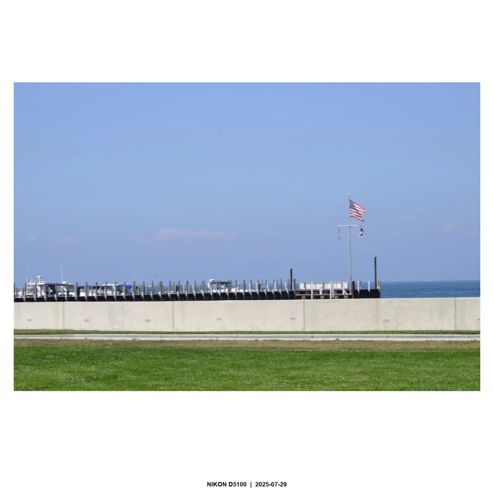
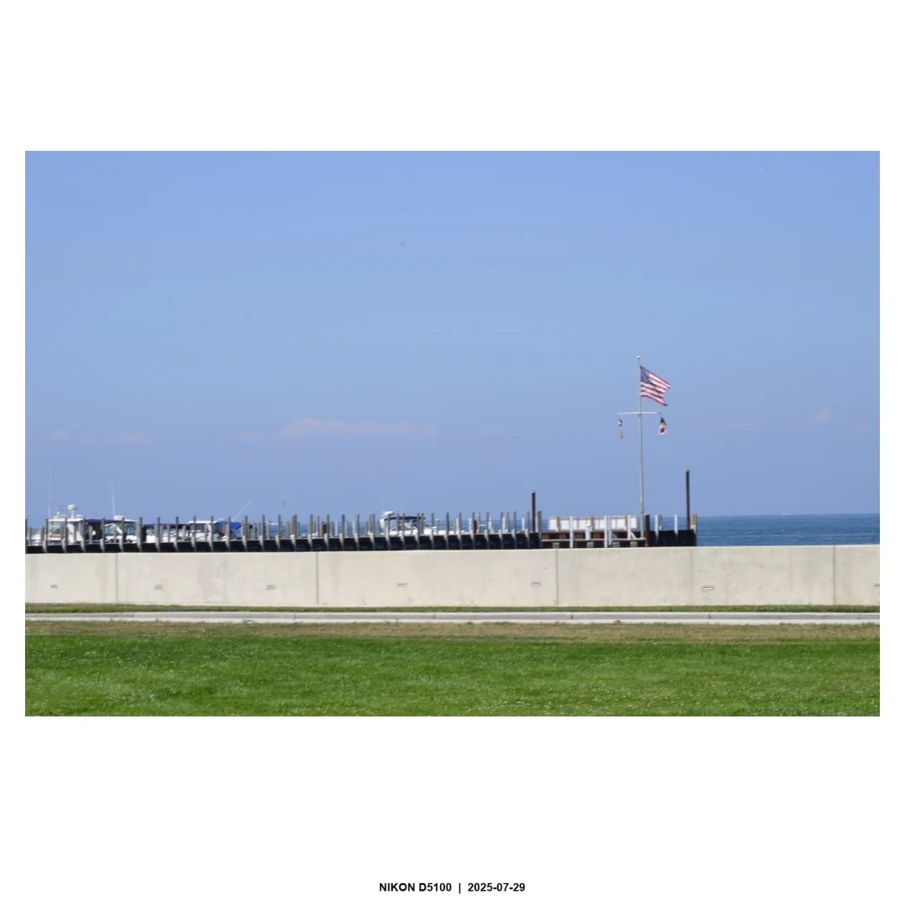

Axiom
Failure is not a defeat; it is a data point.
In Dark Souls, death is not a punishment but a teacher. Each failure reveals a mistake, a pattern, or a timing issue that can be corrected. This philosophy mirrors how I approach my own identity. Obstacles are signals to adapt, not proof of inadequacy.
Icon
The Bonfire represents stability in chaos, a place to reflect and prepare before reentering challenges.
“Don’t you dare go hollow.” — Laurentius of the Great Swamp
To go hollow is to lose purpose. Perseverance is a moral choice, choosing meaning over despair even when progress feels impossible.
Artifact
The Estus Flask symbolizes limited but renewable sources of strength: rest, support, and balance.


 
